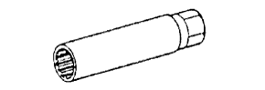

パーシャルエンジンASSY 準備品 【取り付け】
 | 09213-58013 | クランクシャフトプーリー ホールディングツール |
 | (91111-50845) | ボルト |
 | 09330-00021 | コンパニオンフランジ ホールディングツール |
 | 09670-00010 | フロントクロスメンバ- ガイドツ-ル |
| 09816-30010 | オイルプレッシャースイッチ ソケット | |
|  | 09817-33190 | センサーソケットレンチ１９ |
| トルクレンチ | ||
 | EL-400H | エンジンリフター (株)バンザイ扱い |
 | EL-400 | エンジンリフター (株)イヤサカ扱い |
| トヨタ純正 オートフルード タイプＴ-IV | ||
| トヨタ純正 エンジンオイル | ||
| 木片 |